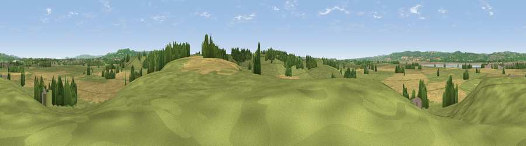

Viewpoint near Ham
#25346 in England · top 44% of its area beats it · near HamWhere it is
The exact computed spot (ST 66225 97775). Click the marker for map links.
The view, rendered

A 360° render of this exact spot computed from the terrain model, tree cover and land cover — summer colours, afternoon light, calibrated against photographs of famous viewpoints. Real trees, hedges and buildings will differ in detail.
The panorama
Grey silhouette: terrain skyline in each direction (720 bearings, Earth curvature and refraction included). Dashed green: skyline with trees (+15 m) and buildings (+8 m) as obstacles. Blue strip: how far the ground is visible on each bearing.
Where the view opens
Wedge length = distance to the farthest visible ground on that bearing (vegetation-aware). Rings at 10, 25 and 50 km.
What fills the view
50% grassland · 34% cropland · 11% woodland · 3% water · 2% built-up
Angular shares of the visible panorama (visual magnitude), not map area. Landscape diversity 0.49 (0–1 Shannon).
Key numbers
More beautiful places nearby
The staircase of upgrades: each row has a higher view potential than everything closer. Driving times are estimates from straight-line distance, calibrated against real road routing — check an actual route before setting out.
| Place | Direction | Drive | Score |
|---|---|---|---|
| Viewpoint near Ham | E · 1 km | ~4 min | 49.4 |
| Viewpoint near Rockhampton | S · 4 km | ~10 min | 51.9 |
| Viewpoint near Rockhampton | S · 6 km | ~12 min | 52.6 |
| Viewpoint near Tortworth | SE · 6 km | ~13 min | 57.5 |
| Viewpoint near Stinchcombe | E · 7 km | ~15 min | 78.7 |
| Viewpoint near Stinchcombe | E · 7 km | ~15 min | 80.5 |
| Garway Hill | NW · 35 km | ~54 min | 84.6 |
| Millennium Hill | NNE · 43 km | ~63 min | 86.9 |
51.67772, -2.48987 · source: screening · position refined by local search. Computed location — check access rights before visiting.